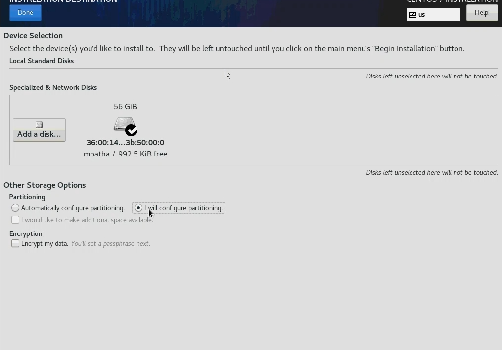
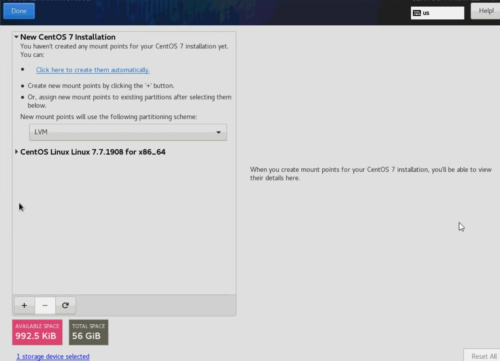
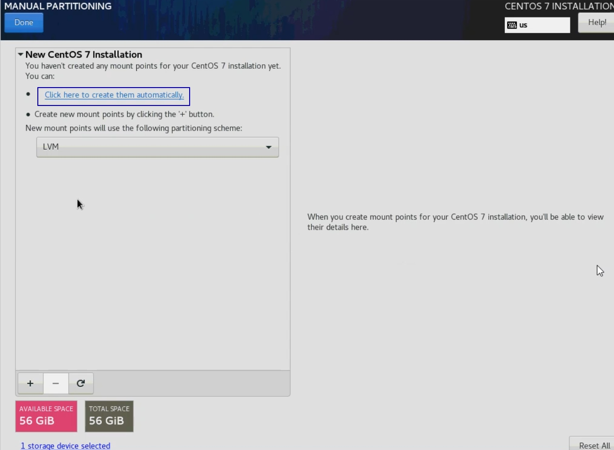
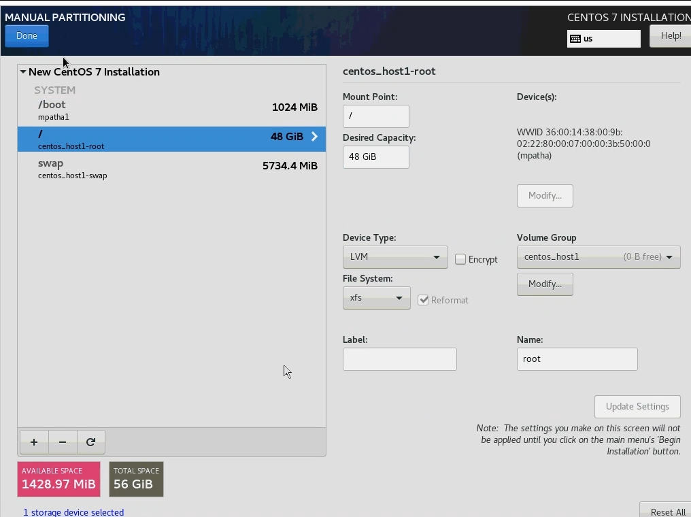

Установка Centos7 на диски схд
Перед установкой
Перед установкой подготовьте на вашей схд системный лун и лун для хранения виртуальных машин. Выполните маппинг сервера к выделенным ему лунам(vdisk'ам) по инструкциям от производителя вашего серверного оборудования. В случае использования системного луна, подключенного по FC, настройте bootFromSan по инструкциям от производителя вашего серверного оборудования.
Для установки необходимо использовать iso-образ Centos7, который доступна в наборе дистрибьютивов для развертывания решения
Подключите полученный iso-образ к серверу, запустите сервер.
Процесс установки
При загрузке откроется меню выбора действия. За 60 секунд выберите Install Centos 7. Если за 60 секунд после загрузки не выбрать данный пункт, то начинается тестирование ресурсов сервера и только после этого начнется установка. Остановить тестирование ресурсов сервера возможно через нажатие клавиши esc.

В случае если загрузка установщика зависнет, то нужно повторно загрузиться с установочного диска и в стартовом меню действий выбрать пункт «Troubleshooting», затем “Install CentOS 7 in basic graphics mode” для запуска установки с сиспользованием псевдографического интерфейса.
В открывшемся окне выберите английский язык (English), который будет использоваться в интерфейсе установщика.
Выбранный язык не влияет на язык внутри самой операционной системы, которая устанавливается без графической оболочки.
Скриншоты инструкции выполнены в интерфейсе с английским языком. Нажмите Continue.
Далее автоматически открывается меню настроек.

Перейдите в DATE & TIME, укажите ваш часовой пояс, время и дату. Нажмите Done.

Перейдите в NETWORK & HOST NAME.

Выберите интерфейс, нажмите кнопку Configure.... В открывшемся окне перейдите на вкладку IPv4 Settings, выберите Method: Manual, введите ip, маску, gw, DNS-сервер. Нажмите кнопку Save.

Переведите тригер возле названия подключения в положение On. В поле Host name введите имя сервера, нажмите кнопку Apply. Нажмите кнопку Done.

Перейдите в Instalation Destination. Выберете диск на который необходимо выполнить установку. Выберете радиокнопку I will configure partitioning. Нажмите Done.

Если диск не отображается, необходимо открыть дополнительное окно под кнопкой Add a disk..., поставить галочку напротив необходимого диска и нажать кнопку Done.

После выбора места установки автоматически открывается следующее меню.

Если диск уже использовался (имел таблицу разделов), то удалите их, как показано ниже.


Когда на диске не останется существующих разделов, нажмите Click here to create them automatically.

Удалите home, как показано ниже.

Освободившееся место отдайте разделу /. Для этого выберете его, укажите в поле Desired Capacity его размер. Минимальный размер диска: 45GB. Измените фокус (выберете другой раздел), чтобы изменения отобразились на экране.
Нажмите Done.

Подтвердите действие кнопкой Accept Changes.

В стартовом меню нажмите кнопку Begin Instalation, чтобы начать установку.

В открывшемся окне выберете Root Password. Введите ваш пароль (рекомендуемый пароль engine). Дважды нажмите Done.

Ожидайте окончания установки. После завершения подтвердите перезагрузку нажатием на кнопку Reboot.